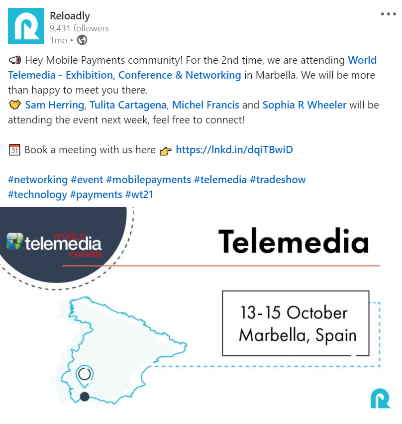

Growth Operation Manual — Standard Operating Procedure
This section describes the standard operating procedure for the growth team.
Social Media Communication
The objective is to maintain brand identity and publish different types of content categories in an organized calendar. All the areas should participate in the content suggestions and ideas, but not all of them are allowed to publish directly on the platforms.
Step One: The Content Specialist is the owner of the social media calendar and the one that can include, organize, and post content in the social platforms (FaceBook, Twitter, LinkedIn, YouTube, Instagram)
How do you request a post on social media?
Everyone can contribute to share content and ideas in the social media channels. The different perspectives and experiences add value to the content, but if everyone speaks out using their own voice, it can also lead to depersonalization and incoherence. That's why we need to frame it in the correct way.
So, if you have an idea or a need to share something with an external audience, you should first have in mind three things:
- The objective of this communication.
- The audience
- The time frame
Then you can go ahead and request the Content Specialist to review your idea and include it in the Social Media calendar.
Depending on each channel the possibilities may be different.
Facebook: This platform provides several formats to play with content, we can post a video, carousel, livestream, event, or text + image. Despite these options, the most recurrent and quick way to post here is using text + image + hashtag + URL (if it leads somewhere else). It's important to always include an image.
Below is a general guide (do & don'ts) that apply to almost all the social media channels:
Do's
- Text + image + URL + hashtag
- English as our main language
- More videos that images
- Tag people or corporate accounts to address them in the communication
- Promote a culture of kindness and integration
- Short and concise ideas that invite reflection, curiosity and innovation
- Include call to action (CTA) to increase engagement with the audience
Don'ts
- Text without image
- Repost from another Facebook account
- Post a crappy image
- Text with syntactic or grammar errors
- Post broken URLs that lead nowhere
- Languages that are not segmented by regions - if a different language is to be used instead of English, countries or audiences where the language is spoken are to be targeted.
- Long videos (more than 10 minutes)
- Videos without subtitles
- Image abusing from the corporate logo
- Share sensitive information from the company or customers
- Share personal data from customers or team members
- Use poor language, racist, homophophic, or violent expressions
Event and trade show communication
For the Events & Trade Shows communications: If a member of the Sales team is attending a trade show or event, the following steps are taken one week before it is announced via Facebook, Twitter and LinkedIn.
- A Calendly link is added to the social media post announcing our attendance at the event. This allows attendees to book a meeting with us during the event.
- In the case of LinkedIn, the profiles of our employees that are attending are tagged on the post. In this way, people can discover anf connect with them.
- A graphic designer prepares the design for the social media post. This includes a logo of the event, the date and the Calendly link citing a call to action for booking a meeting.
Social media post with details of an event
Blog posts
Blog posts are written and hosted using Wordpress content management system (CMS). There are several “roles” admitted to use this platform. Access to WordPress is granted by an admin which could be one of the following individuals:
- Chief Executive Officer
- Chief Technology Officer
- Head of Growth
- Content Specialist
Roles
Administrator: The role with the highest level of authority. They can not only publish, but also create new users and revoke a user as well.
Author: Can access the CMS, create a blog post, and publish it. There are several users with this level of authorization.
It's important to have approval via email from the Content Specialist before publishing a blog post. If the Content Specialist is unavailable, you can also request approval from any of the Administrators detailed before.
Below is a step-by-step guide on how to produce a blog post:
- Write content on a related topic - this can be done by anyone but is usually undertaken by the Content Specialist, the Developer Relations Manager, and a key member of the sales, customer success or engineering team.
- Send the content to the Content Specialist via email in a word document for approval (accepted format is a word document).
- Once approved, the blog post will then be calendarized in the content calendar (the Content Specialist defines the date and time for this publication to go live)
- The blog post is then scheduled on Wordpress using the defined date and time.
- After the publication of the blog post, it will also be distributed by the Content Specialist in the social media channels to amplify the reach and contribute to SEO strategy.
Use case production
To build use cases, the steps listed below are followed:
- Have the topic of interest in the content agenda
- Define the channels and support that will hold this content: video, webinar, blog post, etc.
- Select a partner or client and invite them to participate
- Build the content structure and questions ( What do they do? Who are they? What problem do they solve? What KPI helped them achieve their goals? Business recommendations and insights?)
- Send the questions, or set the interview date/ time with the customer/ partner.
- Produce the content
- Send the content to the client/ partner for revision and approval
- Have the approval and distribution consent by email
- Publish the use case in the platform selected
Who can produce content for use cases?
Usually the Content Specialist will handle the content operation, but this activity may also require other areas to be involved.
For instance, a great source of testimonials come from the Customer Success team. They understand their needs, experience and actual relationship. So if we need to start we need to involve them from the beginning.
Another department that might frequently be also included in the production is Developer Relations. They have the Slack channel as the main source of interaction (as well as Twitter) but the tech stories will usually arise from this side.
External freelancers can also produce use cases. In this regard, we need to make sure they sign a confidentiality agreement before we share information with them, and review the overall idea and questions before sending to the client.
Content centered around use cases usually take a month to be completed, from the beginning (a use case idea is thought of) to the end (article is ready for distribution and goes live).
Monthly Newsletter
The newsletter is called “The Monthly Reload” and it's sent out every last day of the month. The content is produced ad hoc for two main audiences, and each audience receives content based on their profile and interests.
The Content Specialist is responsible for the production of this communication, and has the task to touch base with the internal teams to include the most relevant stories from Reloadly.
After the content is produced, the Content Specialist sends this to the Graphic Designer to build this in the Mailchimp template. After the content has been approved by the Content Specialist and Head of Growth, the newsletter is sent out to each audience.
The newsletter has A/B testing for the subject to understand audience engagement, performance and preferences.
General
- Audience: subscribers, investors, clients, and the internal team
- Sections: Intro, Events & Trade shows, mobile operator updates, product updates, product features and releases, blog, Quote of the Month, new hires, and job postings.
Developers: Technical profiles and Internal Team
- Audience: General Audience (Tag: Developers)
- Sections: Intro, mobile operator updates, developer updates, developer blog, The Decoder, product updates (only if it concerns developers), Quote of the month, and job postings.
PR Agency Management
Before we start working with a PR agency, we need to pitch not less than three providers' proposals. The pitch process should be held by the Head of Growth in line with the CEO and the Finance Manager to evaluate scope and the budget. All the pitch participants must receive the same instructions and be provided with the same amount of time to deliver the pricing and work proposal. After the delivery, the Head of Growth, the CEO and the Finance Manager will choose and debate which is the best option and expose why. After the selection is made, the Head of Growth will send the proper communication of the results to all the participants.
For the PR Agency that is selected, a scope-of-work will be settled and must include:
- Production of the PR
- Distribution in the target media and market
- Reporting of the activity (Clipping / Share of Voice)
- Arrange the interviews between the media and Reloadly´s members if it's required.